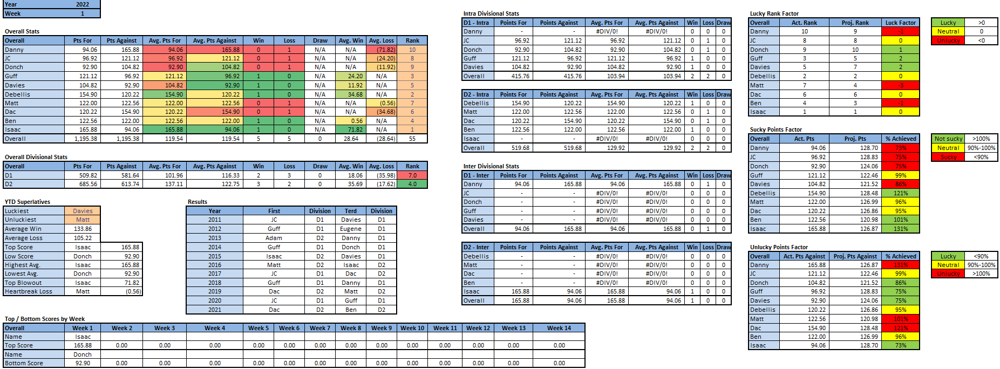

Power Rankings
WEEK 1 POWER RANKINGS
Who do we blame for this
- Isaac (-): Some people talk the talk and others walk the walk. Only the truly great like Isaac do both. Whether simply jealous or just too stupid to recognize a great draft, the rest of the league mocked Isaac’s spot atop the preseason power rankings, only for Isaac to defend his honor with the top score of the week, the biggest blowout, and a complete dismantling of Danny’s horrific assembly of players he calls a team. A god among men, Isaac has clearly established himself as the team to beat this year, and he might not ever lose another fantasy matchup again. King Charles wasn’t the only king crowned this week, and thankfully no queens had to die for Isaac’s ascension to the throne.
- Debellis (+7): Debellis got one of his 7 wins out of the way early this year, with an impressive victory over the defending champion in a rematch of last year’s championship, but this time with infinitely smaller stakes. Mahomes has reverted back to his peak self, while JJ and Swift tacked on over 60 points combined. Breece Bryce Brace Hall was essentially invisible, but not more invisible than Allgeier who was a healthy scratch. Debellis’s team is top heavy AF, putting him right in that sweet spot for a .500 season.
- Guff (-): Despite drafting 2 TEs in the early rounds who combined for <3 points, Guff managed to defeat D1’s best. No one on his team was particularly mind blowing, but the majority of his starters put in solid shifts. It appears the rookie WR whisperer hit the jackpot once again, this time with Jahan Dotson, even though bonehead Guff left him on the bench.
- Ben (+2): Week 1 was either the turning of a new leaf for this Terd, or the pride coming before the fall. Against all odds, Ben didn’t lose his first game as an official Terd, despite having practiced losing for the first 9 months this year. Ben’s team looked surprisingly competent and the future is bright. He may have had a small margin of victory, but thankfully Ben has experience finding success with small things.
- Davies (-3): Davies pulled off a much undeserved victory this week over Donch, barely breaking 100 and having the lowest winning score by almost 20 points. Amazingly, Joe Burrow somehow scored 22.22 points despite having 22 turnovers. It was a nail biter matchup until Davies secured victory midway through MNF on a Jeri Judi bomb. Davies will need to be better if he expects to win next week, and doing things like not benching 21 Cordarrelle Patterson points will be a good start. That shouldn’t be hard as he had to drop his 5th round pick Elijah Mitchell already due to injury. Plus he plays Danny so that definitely makes things easier.
- Dac (-2): Dac had a return to earth in week 1 after crushing the competition all through playoffs to end last year. He still put up a respectable 120 points, good for 2nd highest losing score of the week. Without a team full of all stars like last year, Dac will actually have to try to make the playoffs this year, which shouldn’t be too much of a challenge considering his pedigree and lack of competition from D1.
- Matt (+1): In what should’ve been a gift of an opener, Matt started off the week with a big goose egg from his 4th round pick, Cam Akers, and ultimately ended with a 0.56 pt defeat to the Terd. If Cam Akers had managed to turn his 3 carries into 6 total yards, Matt would be out of the dumps and one step further away from becoming a Terd. Matt’s team is loaded at WR, but unfortunately there are positions other than that, and Matt stinks at all of them.
- JC (-1): JC failed to break 100 in his D1 opener, largely a result of subpar performances from all of his WRs. Whether a flukey week or an indication of things to come, JC will need to work his magic on the waiver wire for the 12th consecutive year if he wants to make the playoffs. Aaron Jones is going to be the 1B to 1A AJ Dillon Harper, and CMC wasted one of his 4 healthy weeks on a JC loss. JC’s team is good enough to probably not be Terd, but a 4th championship is not in the cards for this year.
- Donch (-4): Donch managed to parlay the first overall pick and most favorable drafting position into the lowest score of the week. Aaron Rodgers put up a dud of a game, failing to break 4 points. In addition, Donch was on the Kadarius Toney hype train which rewarded him with 2 points. If Donch’s top draft picks don’t start to materialize soon, he could soon join Davies and Danny in the 2x Terd club.
- Danny (-): Danny, ahem, “mR bEsT DRafT” and “definitely not deserving of last place in the preseason power rankings,” showed everyone nothing has changed this year by posting the 2nd lowest score of the week and losing by over 70 points. The season started exactly as expected, as Danny benched his 19 pt defense in TNF for 2 pts from the Bengals and found himself 88 points behind Friday morning. Danny left 2 of his 3 best players on the bench, both of which wouldn’t have even made his opponent’s top 4. Barring an all time great Saquon performance, Danny would’ve failed to break 80 in week 1. If this is Danny’s idea of a top draft, one can only imagine what a bad draft would’ve looked like.
